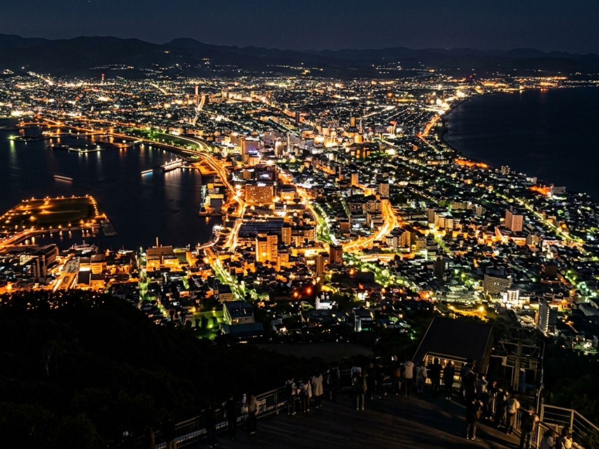
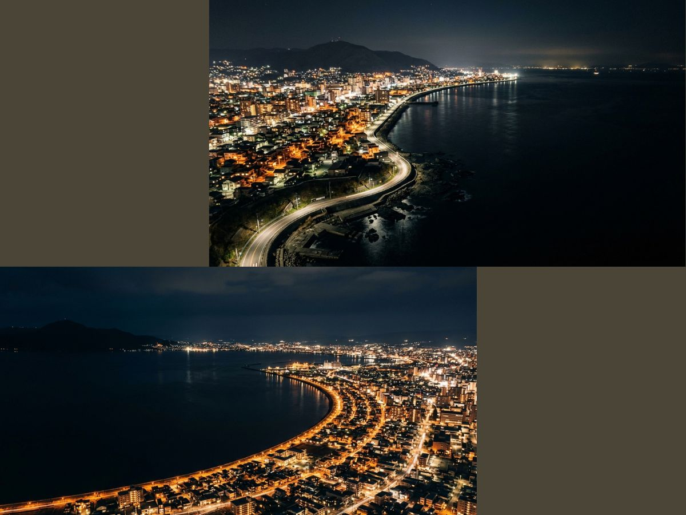
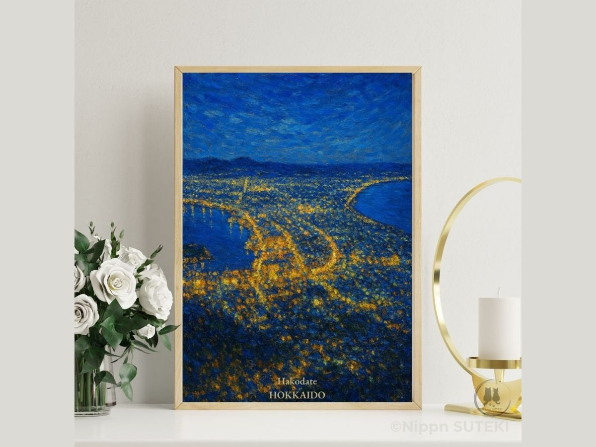

Why the World's Most Beautiful Night View Looks Like a Dragon's Back
The Geometry Hidden in Hakodate's "Million-Dollar" Silhouette
by Kiri
…So. My sister has told you about the star fortress, and the samurai who once stood there. Now you're looking at the poster. The city that holds all of that history — at night.
You don't need to move. I'm not here to explain anything you didn't ask about. I just… noticed you hadn't walked away. And I was curious what you were thinking.
People say it, don't they? "Like an overturned jewelry box."
But to me, it has never looked like scattered jewels. It looks more like the back of something immense, moving slowly in the dark.
I've heard some people abroad call it Dragon's Back. And honestly… I think that one is closer to the truth.
The "narrow" that took thousands of years to design
A miracle of symmetry, holding light captive
The reason this particular view draws people from all over the world isn't the sheer volume of light. There are larger cities, brighter skylines. You can find those anywhere.
What makes this different is the narrow — that slender, almost improbable pinch of land.
Thousands of years ago, what we now call Mt. Hakodate was simply an island. Isolated. Surrounded by sea. Over an immense span of time, ocean currents carried sand, grain by grain, slowly connecting it to the mainland. Geographers call this a tombolo.
The result: a thin corridor of land pressed between two bodies of water. And into that corridor, people came. They built houses. They lit fires. They lived.
The darkness of the sea on both sides is what concentrates the light — compresses it into that precise, luminous shape. This isn't decoration. It isn't planned. It's the accidental collaboration between the earth's slow will and the human instinct to gather, to stay warm, to shine.
…Does it look any different to you now?

The Dragon's Back — Hakodate's tombolo peninsula seen from Mt. Hakodate at night. The sea presses in from both sides, concentrating the light into its precise, luminous shape.
The boundary between cold sea and warm light
The borderline where human presence meets the deep
I'm a cat. Loud places, overly bright places — not really my preference.
But this poster has a quietness to it that I find… settled.
That's because the light doesn't sprawl. It ends. Right beside it sits an overwhelming darkness — Hakodate Bay to the left, the Tsugaru Strait to the right.
If you look closely at the poster, you can see where the points of light trace a curve and then simply… stop. Beyond that edge is cold, deep ocean.
That boundary — the sharpness of where the light ends and the sea begins — is where the geometry comes from. I suspect that's also why collectors abroad respond to this composition the way they do. Not simply because it's exotic, but because there's something in it that feels calculated. Intentional. Even though no one intended it at all.
"Beautiful" is rather too small a word for what the geology here is doing.

The edge of light — where the city ends and the Tsugaru Strait begins. A boundary sharper than anything planned.
What it means to bring the Dragon's Back into your room
Slipping the earth's quiet upheaval into everyday space
…Of course, none of this geological backstory is strictly necessary for choosing a piece of art for your wall. I'm aware of that.
But if you were to hang this poster in your room — and suppose one evening you dimmed the lights, and happened to glance over at the wall — what you'd see wouldn't be a famous tourist destination. You'd see the shape that thousands of years of current carved out, and the breathing of all the people who chose to make their home on that narrow strip of land.
Your sense of the world shifts, just slightly. Quietly.
…Hang this in your room, and you might find your perspective on things changes a little.
…Although perhaps I'm overstating it.
….
It's not as though I intend to stay here until you make a decision. That's not what this is.
But if something about it does speak to you — my sister Sari has already said everything worth saying about where to find it. She's considerably more forthcoming than I am.
I… will be on the cat tower over there. Grooming. Watching.
(She turns, quietly, and pads away without a sound.)

Hakodate HOKKAIDO — available as a digital download art poster from nipponSUTEKI.